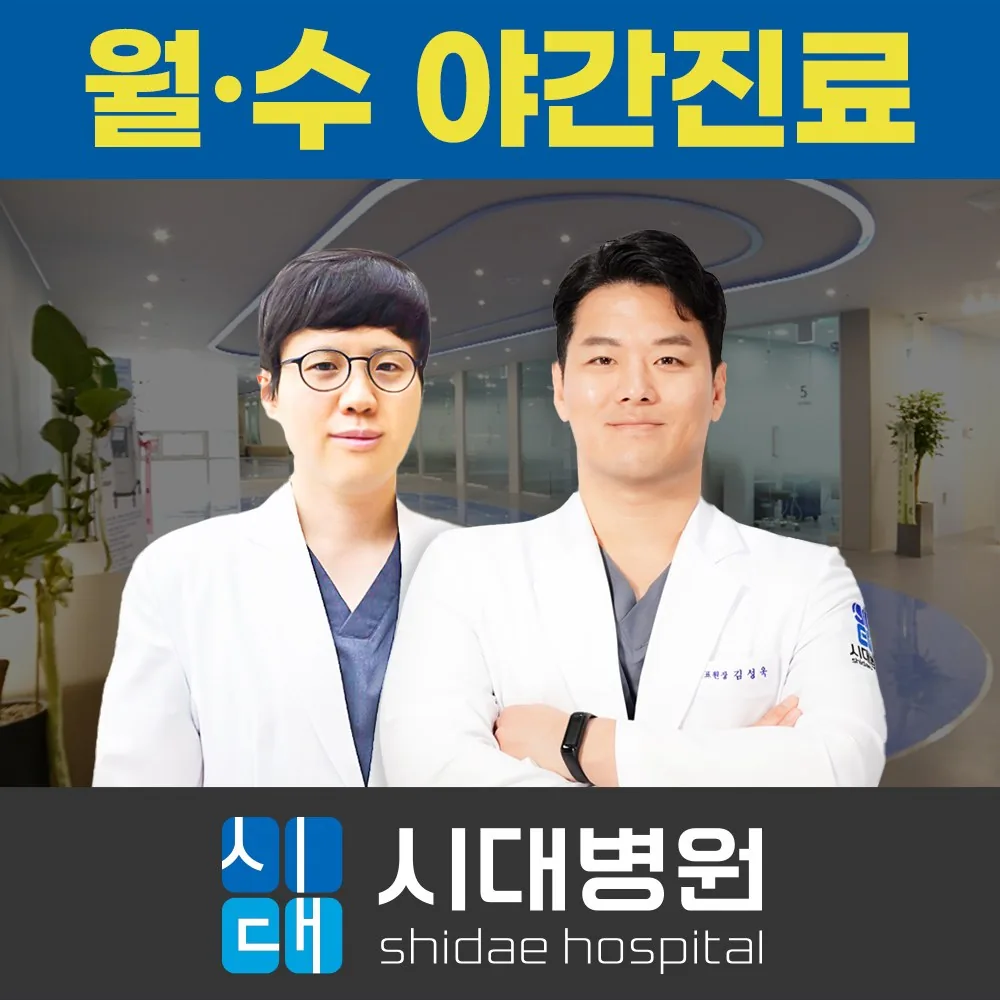

Hours & location
안양정형외과 시대병원 진료시간과 오시는 길
경기도 안양시 동안구 엘에스로 37, 2~5층 (호계동) · 호계동 LS로 변 · 주차 120여 대
진료시간
- 평일
- 09:00–18:00
- 월 · 수 야간
- 20:00까지 진료
- 토요일
- 13:00까지 진료
- 평일 점심
- 13:00–14:00
- 휴진
- 일요일 · 공휴일
- 방문 안내
- 진료과별 접수 마감과 임시 일정은 방문 전 전화로 확인
진료시간은 2026년 10월 공개 자료(비즈프로필·안내 이미지) 기준이며, 일부 자료에는 수요일만 야간진료로 표기되어 있습니다. 야간진료 요일과 진료과별 접수 마감 시간은 방문 전 전화로 확인해 주세요.
연락처
- 대표전화
- 031-344-0100
- 네이버 지도
- 위치·길찾기 ↗
- 공식 홈페이지
- www.shidaehospital.co.kr ↗

오시는 길
- 도로명
- 경기도 안양시 동안구 엘에스로 37, 2~5층 (호계동)
- 층별
- 2층 외래진료실 · 물리치료/재활치료실 · 3층 전문진단검사실 (MRI · 혈액검사 · 영상장비) · 4층 입원병동 · 5층 수술실 · 회복실
- 주차
- 120여 대 주차 가능 (공개 자료 기준, 이용 조건은 방문 전 확인)
안양시 동안구 호계동 LS로(엘에스로) 변 건물의 2~5층입니다. 2층 외래 접수부터 시작하며, 검사실은 3층, 입원병동은 4층, 수술실은 5층입니다.
공개 자료 기준 120여 대 주차가 가능합니다. 진료 시 주차 등록·무료 시간 등 이용 조건은 접수 데스크에서 확인하세요. 대중교통 노선과 길찾기는 네이버 지도를 이용해 주세요.
방문 전 확인
- 다른 병원에서 받은 X-ray·MRI CD와 판독지, 복용약 목록을 가져오면 중복 검사를 줄일 수 있습니다.
- MRI 검사가 예상된다면 체내 금속·전자기기(심장 박동기, 인공관절, 금속 고정물) 여부를 미리 알려 주세요.
- 입원·수술 상담이라면 보호자 동행 가능 여부와 가능한 일정을 함께 준비하세요.
- 야간진료(월·수) 시간대의 검사·치료 가능 범위는 전화로 확인한 뒤 방문하는 것이 좋습니다.